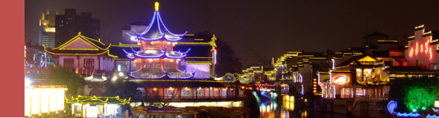

南京夫子庙位于秦淮区秦淮河北岸贡院街、江南贡院以西，即南京孔庙、南京文庙、文宣王庙，为供奉祭祀孔子之地，是中国第一所国家最高学府，也是中国四大文庙，为中国古代文化枢纽之地、金陵历史人文荟萃之地，不仅是明清时期南京的文教中心，同时也是居东南各省之冠的文教建筑群，现为夫子庙秦淮风光带重要组成部分。

夫子庙是一组规模宏大的古建筑群，主要由孔庙、学宫、贡院三大建筑群组成，占地极大。有照壁、泮池、牌坊、聚星亭、魁星阁、棂星门、大成殿、明德堂、尊经阁等建筑。夫子庙被誉为秦淮名胜而成为古都南京的特色景观区，是中国最大的传统古街市，与上海城隍庙、苏州玄妙观和北京天桥为中国四大闹市。秦淮河是古老的南京文化渊源之地，而内秦淮河从东水头至西水关全长4.2公里的沿河两岸，从六朝起便是望族聚居之地，商贾云集，文人荟萃，儒学鼎盛，素有“六朝金粉”之誉。